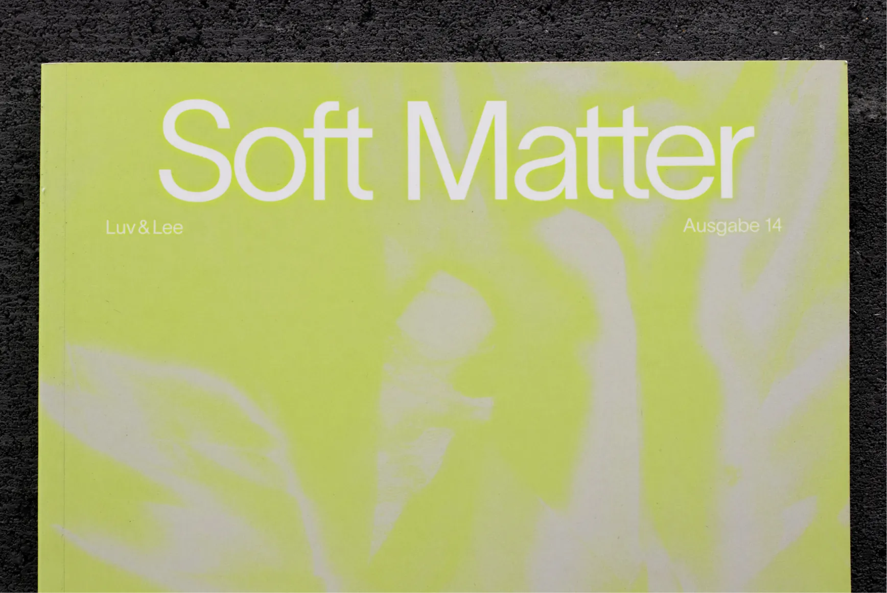

Luv & Lee
The student magazine of the Faculty of Design in Würzburg, three issues as part of the head team.
- Year
- 2020 – 2022
- Context
- student magazine, Faculty of Design, University of Applied Sciences Würzburg
- Team
- changing head team of students
- Role
- head team member for three issues: Tatütata, Soft Matter, Hau Ruck!
- Tools
- graphic design, art direction, print preparation

01 / Magazine
Luv & Lee has been published at the Faculty of Design for over eleven years. Students can express themselves on a changing theme, and the free works are printed in a collected magazine. The head team sets the topic and design framework, supervises the contributors and organizes the printing.

02 / Three issues
I was part of the head team for three issues. Besides supervising contributors and planning the print process with the printing house, I made my own contributions: for Tatütata a collaboration with a kindergarten, where children painted what they associate with the word, plus objects in warning colors and vest patterns; for Soft Matter "Artificial Sunset", a visualization of weather data and light pollution of different cities; for Hau Ruck! a 3D animation with glass that can be activated via AR.

03 / Exhibitions & links
Exhibitions & presentations
- Sold online, in shops and at the semester exhibitions